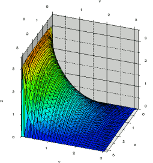
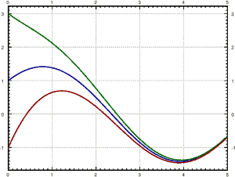

Notes on Diffy Qs: Differential Equations for Engineers
By: Jiří Lebl
(website #1 https://www.jirka.org/ (personal),
website #2 https://math.okstate.edu/people/lebl/ (work: OSU),
email:
)
⇒
Download PDF
/
Buy paperback
/
Web version
/
Sage demos
/
YouTube course
 A first course on differential equations, aimed at engineering students. The prerequisite for the course is the basic calculus sequence. This free online book (OER more formally) should be usable as a stand-alone textbook or as a companion to a course using another book such as Edwards and Penney, Differential Equations and Boundary Value Problems: Computing and Modeling or Boyce and DiPrima, Elementary Differential Equations and Boundary Value Problems (section correspondence to these two is given). I developed and used this book to teach Math 286/285 at the University of Illinois at Urbana-Champaign (one is a 4-day-a-week, the other a 3-day-a-week semester-long course). I also used it for Math 20D at the University of California, San Diego (a 3-day-a-week quarter-long course) and Math 2233 (semester-long introduction) and Math 4233 (an upper division continuation of 2233) at Oklahoma State University. There is enough material to run a two-semester sequence depending on lecturer speed.
The aim is to provide a low cost, redistributable, not overly long, high-quality textbook that students will keep rather than selling back after the semester is over. Even if the students throw it out or sell it, they can always look it up on the net again. Or perhaps today's students mostly use online sources to begin with. (Chances are your students might be using this book even if you are requiring another one.) You are free to have a local bookstore or copy store make and sell copies for your students. See below about the license.
Another aim of the book is to allow modification and customization for a specific purpose if necessary. If you do modify the book, mark it prominently as such to avoid confusion. This aspect is important for the longevity of the book as well. The book can be updated, fixed, and modified even if I happen to drop off the face of the earth. You do not have to depend on any publisher being interested as with traditional textbooks.
Finally, errata are fixed promptly. No need to wait several years for a new edition. Every once in a while I may make some major addition and a new major version (edition), and then in between as errata are fixed I make minor version updates (like a corrected printing) usually once or twice a year, depending on the errata discovered. Exercise, chapter, and section numbers are preserved as much as humanly possible. What's added is added at the end with new numbers, so the book is generally compatible even if students (or the instructor) have an older printed copy. The minor updates are totally interchangeable and have very minimal changes, essentially nothing new.
The graphs in the book were created using the Genius software.
MAA published a review of the book (they looked at the December 2012 edition; quite bit of stuff has happened since then). 
Table of contents:
Introduction
1. First-order equations
2. Higher-order linear ODEs
3. Systems of ODEs
4. Fourier series and PDEs
5. More on eigenvalue problems
6. The Laplace transform
7. Power-series methods
8. Nonlinear systems
A. Linear algebra
There are 747 exercises throughout the book, 251 of which have a solution in the back (those numbered 101 and above). A few exercises are within the section text, but most are in their own subsection at the end of every section. Each section should have enough exercises for homework even for a demanding class.
Please let me know at if you find any typos or have corrections, extra exercises or material, or any other comments.
Adoption:
If you use the book for teaching a course, do let me know ()! The book was used, or is being used, at over a hundred universities and colleges including Dartmouth College, University of Tennessee, University of Toledo, University of British Columbia, University of California at Irvine, University of Kentucky, University of Hawaii, and many others.
The book has been selected as an Approved Textbook in the American Institute of Mathematics Open Textbook Initiative.
See a list of classroom adoptions for more details.
Download:
Download the book as PDF
(December 10th, 2025, version 6.10, 466 pages, approximately 4.1 MB download)
Version 6 added Appendix A (linear algebra), and sections 1.9 and 6.5 (PDEs).
Look at the errata in the current revision (if any).
Look at the change log to see what changed in the latest version.
Buy paperback:
I get a bit of money when you buy these (depending on where exactly they are bought). Probably enough to buy me a coffee, so by buying a copy you will support this project. You will also save your toner cartridge. The difference between these two versions is essentially just the cover art. I have seen printed versions from both and they are both good quality.
![Differential Equations Cover]()
|
ISBN-13: 978-1706230236
ISBN-10: 1706230230

|
Web version:
Browse the web version of the book (for easier reading on the web). This version uses PreTeXt and so should be easier to browse and read. The PDF version is the canonical version and should be the one used for printing.
Search:
Search this site, including the web version (Google puts in a bunch of ads at the top of every search, unfortunately, can't get rid of that):
Interactive Sage demonstrations:
Sage is a very comprehensive free mathematical software. Here we collect some relevant Sage worksheets and demonstrations you can play around with. Some simply use Sage to give a demonstration, but many are worksheets where you can edit the code and use it to experiment. The code here runs on the free SageCell server; you cannot save your work and there are other limitations. If you want to use Sage without installing but still want to be able to save your work and do more complicated computations, consider CoCalc, which is a cloud based Sage installation.
Using Sage for ODE: Plot functions, solve ODEs numerically and symbolically.
Section 1.2: Plot slope fields and solutions given an initial condition.
Section 1.3: Plot implicit solutions.
Section 1.6: Several interactive demos on autonomous equations in one variable.
Section 1.7: An interactive demo of Euler's method.
Section 1.8: Plot level sets of potential functions; implicit solutions to exact equations.
Section 1.9: Plotting the characteristics, and the solutions to first order linear PDE.
Section 2.3: Using Sage to solve the characteristic polynomials.
Section 2.4: Several animations of mechanical vibrations.
Section 2.6: Interactive demo of forced oscillations and resonance.
Section 3.1: Using Sage to solve systems of ODE and plotting vector fields.
Section 3.2: Using Sage for solving linear systems and basic matrix operations.
Section 3.5: Interactive demos of two-dimensional autonomous systems.
Section 3.6: A second order system (carts connected with springs) interactive demo.
YouTube course and slides (not yet complete):
I am building a set of slides and a YouTube course. You may want to watch it fullscreen. The course is not yet complete, new lectures are added as time allows.
The Slides: (also incomplete so far) as PDFs. Note that some of the slides have been slightly improved since I recorded the lectures, so they might not match 100%.
Instructor resources:
Online homework (WeBWorK / Edfinity):
WeBWorK: I put together a set of problems for WeBWorK with 497 problems. Download the set as a tgz file (or see the github repository). Just upload the tgz file to your WeBWorK course, and it will automatically unpack in your templates directory and create a directory called diffyqs-webwork. There are predefined problem sets for the relevant sections, as "def" files, that you can "import" as new homework. There are currently problems for chapters 0, 1, 2, 3, 4, 6, 7, 8, A. The problems also have links to the web version of the book for easy reference. Majority of the problems come from OPL (Open Problem Library), but have been edited to fit the course or generally improved, some have been edited or changed quite heavily, and quite a few new problems were added. There should be enough problems for most types of courses, but let me know if anything is missing, or if there are other OPL problems that you think I should include.
Edfinity: Essentially the same set of problems, based on a slightly older version of my set, is available on Edfinity. Edfinity may be a bit easier to use than WeBWorK, you don't have to install anything, it is hosted by Edfinity, and is student-paid. Unfortunately, the Edfinity set seems to have diverged from my version over time, and for example, these do not have the book links. You can still add other OPL problems into your class, create your own, or if you prefer my set, you can download the set above and paste in my set as webwork problems.
Let me know () if you use the problem set. I'm also interested to know any feedback on what's missing, what should be changed, etc.
Discussion/Announcement forum:
I set up a discussion forum for the book on Google Groups. I expect this to be a low volume forum, but it might be a good place for instructors to interact, where to post extra material, ask a question of the other instructors, discuss the WeBWorK problems, and I will send announcements there, such as when a new version is out.
Other instructor resources:
I put together all the figures as PDFs as one big zipfile. This should make it easier to create computer slides using the figures, without messing with the source tarball. If a figure appears in multiple places, its filename only refers to the first such place.
There's tons of extra materials (including longer modeling projects) at SIMIODE.
The IODE software is a free software package for experimenting with basic ODEs developed at University of Illinois specifically for teaching this kind of course. IODE works both with Matlab (proprietary) and Octave (free, but no GUI). The IODE website has several extra projects for the students to work through as homework.
Adam Spiegler of the University of Colorado Denver has put together a suite of Jupyter notebooks that are linked to various sections in this book and also in Trench's book.
Translations, derivative versions, video lectures:
Prof. Martin Weilandt of Universidade de Santa Catarina has prepared a partial Portuguese translation. See his class page.
Prof. Charles Bergeron has created a modified version of the book. The title is Differential Equations: Including Linear Algebra Topics And Computer-Aided Problem-Solving. This book removes some topics (e.g. PDEs), and adds its own linear algebra chapter (this was before appendix A). The book covers the use of the computer algebra system Maxima in the context of the material.
The department at University at Buffalo (Brian Hassard, James Javor, John Ringland, Asela Viraj) have created their own edition without the PDE content and including some extra content on using python.
Prof. Matthew Charnley made a version for Rutgers University that modifies and restructures the text to fit the syllabus at Rutgers and, for example, adds an appendix on using MATLAB.
The text (slightly older version) has been entered into the libretext.org platform run by UC Davis.
Trefor Bazett of the University of Victoria, has a custom version including video lectures on YouTube (linked from his version of the text).
Allan Majdanec of Douglass College created a set of video lectures on YouTube using the book (though slightly different order of sections).
Source:
The source is hosted on GitHub: https://github.com/jirilebl/diffyqs
You can get an archive of the source of the released version on github, look under https://github.com/jirilebl/diffyqs/releases, though if you plan to work with it, maybe best to look at just the latest working version as that might have any errata or new additions. Though these might be a work in progress. Perhaps best is to let me know.
The main file is diffyqs.tex, which includes the chapters that are in separate files ch-*.tex. I compile the pdf with pdflatex diffyqs. You also want to run makeindex to generate the index (I generally run pdflatex diffyqs three times, then makeindex diffyqs, and then finally pdflatex diffyqs again). The setup file with all the preamble you may want to edit is diffyqssetup.sty.
The github 'master' version is the current working version, so it will have whatever new changes I make in my tree.
Slides (incomplete so far) used for the youtube lectures: as PDFs (may have been edited since recording). The LaTeX source for the slides is available on github in the slides subdirectory. You have to build them from there to get the figures right if you want to rework the slides, or you'd have to probably modify the source and copy the figures out of the figures subdirectory. Feel free to use them for your class, the license is the same as the book.
During the writing of this book, the author was in part supported by NSF grant DMS-0900885 and DMS-1362337.
License:

 This work is
dual licensed under a
Creative Commons
Attribution-Noncommercial-Share Alike 4.0 License and
Creative Commons
Attribution-Share Alike 4.0 License.
You can use, print, copy, and share this book as much as you want. You can
base your own book/notes on these and reuse parts if you keep the license the
same (that is, as long as you use at least one of the two licenses).
This work is
dual licensed under a
Creative Commons
Attribution-Noncommercial-Share Alike 4.0 License and
Creative Commons
Attribution-Share Alike 4.0 License.
You can use, print, copy, and share this book as much as you want. You can
base your own book/notes on these and reuse parts if you keep the license the
same (that is, as long as you use at least one of the two licenses).
Useful links:
- My other free undergraduate textbook: Basic Analysis: Introduction to Real Analysis
- My graduate textbook: Cultivating Complex Analysis
- My graduate textbook: Tasty Bits of Several Complex Variables
- Differential equation - Wikipedia, the free encyclopedia
- List of approved free textbooks from the American Institute of Mathematics
- Online Mathematics Textbooks
- Math Books
- SIMIODE, lots of resources including longer projects especially focusing on modeling.
- IODE software
- OnlineCourses.com, a directory of online courses
- WeBWorK, free software online homework system with lots of questions on differential equations (mainly ODE) in the standard problem library, some from this book.